Γνωριμία με το Claude — Τα Πρώτα Βήματα
Σκοπός της παρούσας ενότητας είναι να θέσει τα γερά θεμέλια για την ομαλή μετάβασή σας στον κόσμο της γενετικής τεχνητής νοημοσύνης — ώστε να χρησιμοποιείτε το Claude με απόλυτη αυτοπεποίθηση ως έναν καθημερινό ψηφιακό συνεργάτη.
Μαθησιακοί στόχοι
- Να κατανοήσετε τι είναι το Claude και τη φιλοσοφία του Constitutional AI.
- Να συγκρίνετε τα πλάνα Free, Pro, Max, Team και Enterprise και να επιλέξετε το κατάλληλο.
- Να δημιουργήσετε λογαριασμό και να εγκαταστήσετε την εφαρμογή σε υπολογιστή και κινητό.
- Να πραγματοποιήσετε την πρώτη σας συνομιλία και να αξιοποιείτε τα follow-up prompts.
- Να εφαρμόζετε τους 4 πυλώνες του καλού prompting (Ρόλος, Πλαίσιο, Στόχος, Παραδείγματα).
- Να ρυθμίσετε σωστά τα Settings: Custom Instructions, ιδιωτικότητα, capabilities και όρια χρήσης.
Σκοπός της ενότητας
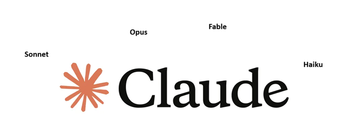
Σκοπός της παρούσας ενότητας είναι να θέσει τα γερά θεμέλια για την ομαλή μετάβασή σας στον κόσμο της γενετικής τεχνητής νοημοσύνης. Ολοκληρώνοντας αυτό το κεφάλαιο, δεν θα έχετε απλώς εξοικειωθεί με το βασικό περιβάλλον του Claude, αλλά θα είστε σε θέση να το χρησιμοποιείτε με απόλυτη αυτοπεποίθηση ως έναν καθημερινό ψηφιακό συνεργάτη.
Πιο συγκεκριμένα, θα κατανοήσετε την ιδιαίτερη φιλοσοφία του μοντέλου, ώστε να αξιολογήσετε και να επιλέξετε με στρατηγικό κριτήριο την κατάλληλη συνδρομητική έκδοση για τις δικές σας ανάγκες. Το κυριότερο, όμως, είναι ότι θα μάθετε να συντάσσετε δομημένα και στοχευμένα prompts (οδηγίες), τα οποία θα εξασφαλίζουν σταθερά υψηλής ποιότητας αποτελέσματα.
Τι είναι το Claude και τι το ξεχωρίζει
Στην αρχή αυτού του εκπαιδευτικού ταξιδιού, είναι απαραίτητο να κατανοήσετε την ταυτότητα και τη φιλοσοφία πίσω από ένα από τα πιο ισχυρά εργαλεία τεχνητής νοημοσύνης. Το Claude είναι ένα προηγμένο μεγάλο γλωσσικό μοντέλο (Large Language Model - LLM), το οποίο έχει σχεδιαστεί για να λειτουργεί ως ένας ευφυής ψηφιακός βοηθός. Μπορεί να επεξεργαστεί, να αναλύσει και να παράγει κείμενο, κώδικα και δεδομένα με εξαιρετική ακρίβεια.
Το Claude δημιουργήθηκε από την εταιρεία Anthropic, η οποία ιδρύθηκε το 2021 από πρώην ηγετικά στελέχη και ερευνητές της OpenAI. Η Anthropic διαφοροποιήθηκε στον κλάδο θέτοντας ως απόλυτη προτεραιότητα την ανάπτυξη μιας «ασφαλούς, επεξηγήσιμης και ευθυγραμμισμένης» τεχνητής νοημοσύνης. Η προσέγγιση αυτή ονομάζεται Constitutional AI (Συνταγματική Τεχνητή Νοημοσύνη), καθώς το μοντέλο εκπαιδεύεται με βάση ένα σύνολο γραπτών αρχών, ένα «σύνταγμα» (https://www.anthropic.com/constitution), το οποίο αντλεί έμπνευση από παγκόσμια κείμενα, όπως η Οικουμενική Διακήρυξη των Δικαιωμάτων του Ανθρώπου, καθώς και από κανόνες ασφάλειας στον κυβερνοχώρο. Η φιλοσοφία αυτή προάγει την αντικειμενικότητα, την αποφυγή παραπληροφόρησης και τον σεβασμό προς τον χρήστη.
Η ιεραρχία του «Συντάγματος»
Αξίζει να σημειωθεί ότι το Σύνταγμα αυτό θέτει μια αυστηρή ιεραρχία στις προτεραιότητες του Claude. Για παράδειγμα, αν μια οδηγία του χρήστη έρχεται σε σύγκρουση με τους κανόνες ασφάλειας, το μοντέλο είναι προγραμματισμένο να δώσει προτεραιότητα στην καθολική ασφάλεια και την ηθική, αρνούμενο ευγενικά να εκτελέσει μια επιζήμια εντολή.
Η Anthropic επισημαίνει με ειλικρίνεια ότι η διαμόρφωση αυτού του Συντάγματος αποτελεί ένα «έργο σε συνεχή εξέλιξη» (work in progress), το οποίο αναθεωρείται διαρκώς καθώς η τεχνολογία εξελίσσεται, με σκοπό το Claude να παραμένει ένας εξαιρετικά ευφυής, αλλά ταυτόχρονα έντιμος και προσεκτικός βοηθός για την κοινωνία.
Claude: Τι είναι και ποιες εκδόσεις διαθέτει
Claude: Τι είναι και ποιες εκδόσεις διαθέτει
Το βίντεο παρουσιάζει συνοπτικά την ταυτότητα του Claude και τις διαθέσιμες εκδόσεις του — μια ιδανική γέφυρα για την επόμενη υποενότητα, όπου θα αναλύσουμε τα πλάνα ένα προς ένα.
Τι να προσέξετε: τη φιλοσοφία της Anthropic, τα σημεία που διαφοροποιούν το Claude από άλλα εργαλεία ΤΝ και τα κριτήρια με τα οποία ξεχωρίζουν μεταξύ τους οι εκδόσεις.
Ερώτηση κατανόησης
Τι σημαίνει στην πράξη η προσέγγιση «Constitutional AI» της Anthropic;
Free vs Pro vs Max vs Team vs Enterprise — Ποια έκδοση χρειάζομαι
Για να μπορέσετε να εντάξετε το Claude αποτελεσματικά στην καθημερινή ή την επαγγελματική σας δραστηριότητα, είναι απαραίτητο να κατανοήσετε τις επιλογές που έχετε όσον αφορά τα διαθέσιμα πλάνα χρήσης. Η Anthropic προσφέρει διαφορετικά επίπεδα πρόσβασης, προκειμένου να καλύψει από απλές, καθημερινές ανάγκες έως και εξαιρετικά απαιτητικά εταιρικά περιβάλλοντα εργασίας.
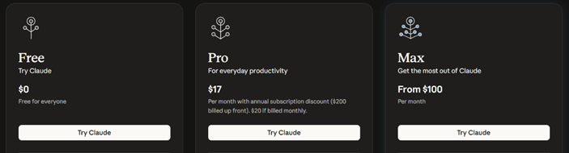
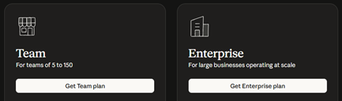
Δωρεάν Πλάνο (Free Plan — $0 / μήνα)
Το δωρεάν πλάνο αποτελεί την πύλη εισόδου σας στον κόσμο του Claude. Η Anthropic έχει αναβαθμίσει σημαντικά το δωρεάν πλάνο, επιτρέποντάς σας να χρησιμοποιείτε τις περισσότερες από τις βασικές και προηγμένες λειτουργίες της πλατφόρμας, αλλά με αυστηρούς περιορισμούς στη συχνότητα χρήσης (Usage Limits).
- Πολυμεσική πρόσβαση: Μπορείτε να συνομιλείτε με το Claude στο Web, σε συσκευές iOS και Android, καθώς και στην εφαρμογή για υπολογιστές (Desktop App).
- Παραγωγή περιεχομένου και κώδικα: Έχετε τη δυνατότητα να γράφετε, να επεξεργάζεστε κείμενα, να δημιουργείτε περιεχόμενο, να παράγετε κώδικα προγραμματισμού και να οπτικοποιείτε δεδομένα (μέσω των Artifacts).
- Πρόσβαση στο Διαδίκτυο (Web Search): Μπορείτε να ζητάτε από το Claude να ανατρέχει στο internet σε πραγματικό χρόνο για την εύρεση επίκαιρων πληροφοριών.
- Μνήμη (Memory): Το μοντέλο μπορεί να συγκρατεί πληροφορίες και προτιμήσεις σας ανάμεσα σε διαφορετικές συνομιλίες.
- Εκτέλεση κώδικα (Code Execution): Το Claude μπορεί να δημιουργεί αρχεία και να εκτελεί κώδικα σε ένα ασφαλές περιβάλλον για να επαληθεύει τα αποτελέσματά του.
- Βασική διασύνδεση εφαρμογών (Connectors & Extensions): Μπορείτε να επεκτείνετε τις δυνατότητές του με desktop extensions και να συνδέσετε υπηρεσίες όπως το Google Workspace και το Slack για να αναλύει αρχεία.
- Extended Thinking: Μπορείτε να ενεργοποιήσετε τη λειτουργία παρατεταμένης σκέψης για την επίλυση πιο σύνθετων προβλημάτων.
- Περιορισμένος αριθμός μηνυμάτων (Usage Limits): Οι δωρεάν χρήστες μπορούν να στείλουν περίπου 30 έως 100 μηνύματα την ημέρα. Η μεταφόρτωση ή η ανάλυση μεγάλων εγγράφων καταναλώνει το όριο αυτό πολύ πιο γρήγορα. Μόλις το όριο εξαντληθεί, απαιτείται αναμονή 4 έως 8 ωρών για την επαναφορά του.
- Απουσία του μοντέλου Claude Opus: Το Free πλάνο περιλαμβάνει το μοντέλο Sonnet 4.6 και Haiku 4.5. Δεν σας δίνει πρόσβαση στο ισχυρότερο μοντέλο Claude Opus 4.6/4.8 και Fable 5, τα οποία αξιοποιούν στο μέγιστο το παράθυρο πλαισίου (context window) του 1 εκατομμυρίου tokens, προσφέροντας παράλληλα κορυφαίες επιδόσεις σε σύνθετη λογική σκέψη, προηγμένο κώδικα και αυτόνομες ροές εργασίας (agentic workflows).
- Απεριόριστα Projects (Unlimited Projects): Αν και η Anthropic άνοιξε τη βασική χρήση των Projects για όλους, το Free πλάνο δεν περιλαμβάνει τη δυνατότητα να δημιουργείτε απεριόριστους φακέλους εργασίας (Unlimited Projects) για να οργανώνετε μόνιμα διαφορετικές βάσεις γνώσης, βιβλία και εταιρικά αρχεία.
- Προτεραιότητα πρόσβασης (Priority Access): Το Free πλάνο δεν σας εγγυάται σταθερή ταχύτητα και διαθεσιμότητα. Σε ώρες αιχμής (υψηλής κίνησης από χρήστες παγκοσμίως), οι δωρεάν χρήστες ενδέχεται να υποστούν καθυστερήσεις, μειωμένα όρια ή ακόμη και προσωρινό αποκλεισμό από την πλατφόρμα.
Pro Plan ($20/μήνα ή $17/μήνα με ετήσια δέσμευση — $200 προκαταβολικά)
Πέρα από όλες τις δυνατότητες που παρέχονται ήδη στην έκδοση Free, με την αναβάθμισή σας σε Pro ξεκλειδώνετε τα εξής προνομιακά χαρακτηριστικά:
Περιλαμβάνει:
Απελευθερώνεστε από τα στενά όρια του δωρεάν πλάνου. Σας παρέχεται πολύ μεγαλύτερη χωρητικότητα μηνυμάτων, επιτρέποντάς σας να πραγματοποιείτε εκτενείς συνομιλίες και να αναλύετε μεγάλα έγγραφα χωρίς τον φόβο της άμεσης εξάντλησης του ορίου.
Αποκτάτε πρόσβαση στο εξειδικευμένο εργαλείο της Anthropic για προγραμματιστές, το οποίο λειτουργεί απευθείας μέσα από το τερματικό σας (terminal-based agent) για την αυτοματοποίηση, τη συγγραφή και τον έλεγχο κώδικα.
Ενεργοποιείτε ένα εξελιγμένο περιβάλλον συνεργασίας με το μοντέλο, ιδανικό για τη συνδιαχείριση σύνθετων workflows και την οργάνωση μακροπρόθεσμων εργασιών.
Μπορείτε να δημιουργείτε όσους ψηφιακούς φακέλους εργασίας επιθυμείτε. Σε κάθε Project μπορείτε να αποθηκεύετε μόνιμα συγκεκριμένα έγγραφα, βιβλία, οδηγίες ή αρχεία κώδικα, ώστε το Claude να απαντά πάντα ευθυγραμμισμένο με τη δική σας εξειδικευμένη βάση γνώσης.
Ξεκλειδώνετε προηγμένες δυνατότητες έρευνας, όπου το μοντέλο μπορεί να πραγματοποιεί βαθύτερες αναζητήσεις, να διασταυρώνει πηγές και να συνθέτει αναλυτικές αναφορές για σύνθετα ζητήματα.
Σας δίνεται η ελευθερία να επιλέγετε ανάμεσα σε διαφορετικά μοντέλα της Anthropic (όπως το κορυφαίο Claude Opus για εξαιρετικά περίπλοκη λογική σκέψη και μεγάλα contexts), ανάλογα με τις απαιτήσεις της εργασίας σας.
Περιλαμβάνει τις native εφαρμογές Claude for Microsoft 365 και Claude for Microsoft Outlook, επιτρέποντάς σας να αλληλεπιδράτε με τα email, τα ημερολόγια και τα έγγραφα εργασίας σας απευθείας μέσα από τα εργαλεία της Microsoft.
Max Plan ($100/μήνα)
Το πλάνο Max αποτελεί την premium επιλογή της Anthropic για «power users», αναλυτές δεδομένων και επαγγελματίες προγραμματιστές που απαιτούν τη μέγιστη δυνατή ισχύ και χωρητικότητα από έναν ψηφιακό βοηθό. Το κόστος του ξεκινά από τα $100 τον μήνα, αποτελώντας μια flat συνδρομητική λύση για όσους κάνουν εξαιρετικά βαριά χρήση και θα ξόδευαν πολύ μεγαλύτερα ποσά μέσω της χρήσης API.
Επιλέγοντας το πλάνο Max, διατηρείτε όλα τα εργαλεία και τις δυνατότητες της έκδοσης Pro (συμπεριλαμβανομένων των Claude Code, Claude Cowork, Research και των ενσωματώσεων με Microsoft 365/Outlook), αλλά ξεκλειδώνετε τα εξής κορυφαία πλεονεκτήματα:
Περιλαμβάνει:
Αυτό είναι το βασικό χαρακτηριστικό του πλάνου. Ανάλογα με το επίπεδο συνδρομής που θα επιλέξετε (Max 5x ή Max 20x), αποκτάτε πενταπλάσιο ή εικοσαπλάσιο όριο μηνυμάτων και tokens σε σχέση με το ήδη αυξημένο πλάνο Pro. Αυτό σας επιτρέπει να εργάζεστε αδιάκοπα όλο το εικοσιτετράωρο, ακόμη και με τα πιο «βαριά» μοντέλα.
Το Claude Max σας επιτρέπει να λαμβάνετε πολύ πιο εκτενείς απαντήσεις σε μία μόνο αναζήτηση. Είναι ιδανικό για τη δημιουργία τεράστιων ενοτήτων κώδικα, πολυσέλιδων αναφορών ή ολόκληρων κεφαλαίων κειμένου, χωρίς το μοντέλο να σταματά στη μέση λόγω περιορισμών στο output.
Ως συνδρομητές Max, βρίσκεστε στην πρώτη γραμμή των εξελίξεων της Anthropic. Έχετε αποκλειστική και άμεση πρόσβαση σε νέα μοντέλα, πειραματικές λειτουργίες και advanced εργαλεία πριν αυτά κυκλοφορήσουν στο ευρύ κοινό ή στους χρήστες Pro.
Σας διασφαλίζεται η μέγιστη δυνατή ταχύτητα απόκρισης και μηδενική αναμονή, ακόμη και κατά τις ώρες παγκόσμιας αιχμής, όπου η κίνηση στους διακομιστές της εταιρείας χτυπάει κόκκινο.
Ερώτηση κατανόησης
Ποιο πλάνο προσφέρει επιλογή 5x ή 20x μεγαλύτερης χρήσης σε σχέση με το Pro;
Claude Team (για ομάδες από 5-150 άτομα)
Το πλάνο Team είναι ειδικά σχεδιασμένο για επιχειρήσεις και οργανισμούς (από 5 έως 150 άτομα) που επιθυμούν να εντάξουν την τεχνητή νοημοσύνη στις καθημερινές τους διαδικασίες, διασφαλίζοντας παράλληλα κεντρικό έλεγχο, προηγμένη ασφάλεια δεδομένων και δυνατότητες συνεργασίας.
Η Anthropic προσφέρει τη δυνατότητα να συνδυάσετε διαφορετικούς τύπους θέσεων (mix and match seat types) μέσα στην ίδια ομάδα, ανάλογα με τις ανάγκες του κάθε υπαλλήλου.
Το εταιρικό περιβάλλον χωρίζεται σε δύο επίπεδα θέσεων εργασίας (seats):
Οι δύο τύποι θέσεων του Team
Α. Θέση Standard (Standard seat)
Απευθύνεται στα μέλη της ομάδας που χρειάζονται συστηματική πρόσβαση για καθημερινές εργασίες παραγωγικότητας.
- Κόστος: $20 ανά θέση / μήνα με ετήσια χρέωση (ή $25 ανά θέση με μηνιαία χρέωση).
- Δυνατότητες: Περιλαμβάνει όλες τις δυνατότητες του Claude, καθώς και σημαντικά μεγαλύτερη χρήση (more usage) σε σχέση με το ατομικό πλάνο Pro.
Β. Θέση Premium (Premium seat)
Σχεδιασμένη για τους "power users" της επιχείρησης, όπως full-time developers ή αναλυτές.
- Κόστος: $100 ανά θέση / μήνα με ετήσια χρέωση (ή $125 ανά θέση με μηνιαία χρέωση).
- Δυνατότητες: Προσφέρει 5 φορές μεγαλύτερη χρήση σε σχέση με τις θέσεις Standard, ενώ περιλαμβάνει αποκλειστικά την πρόσβαση στα advanced εργαλεία Claude Code (για το τερματικό) και Claude Cowork.
Τα Κεντρικά Προνόμια του Πλάνου Team
Επιλέγοντας το πλάνο Team, η επιχείρησή σας ξεκλειδώνει μια σειρά από προηγμένες δυνατότητες διαχείρισης και ασφάλειας:
Μπορείτε να συνδέσετε κεντρικά το Microsoft 365, το Slack και άλλες καθημερινές υπηρεσίες για την άμεση ροή πληροφοριών.
Το Claude μπορεί να πραγματοποιεί αναζητήσεις σε ολόκληρη τη βάση γνώσης και τα έγγραφα του οργανισμού σας, λειτουργώντας ως ένας κεντρικός ψηφιακός αρχειοθέτης.
Ο διαχειριστής έχει τον απόλυτο έλεγχο των συνδρομών, των χρηστών και των πληρωμών από ένα ενιαίο περιβάλλον.
Διασφαλίζεται η εύκολη και ασφαλής πρόσβαση των υπαλλήλων μέσω των εταιρικών τους κωδικών.
Ο διαχειριστής μπορεί να ορίζει και να ελέγχει ποιοι τοπικοί ή απομακρυσμένοι σύνδεσμοι (connectors/MCP) επιτρέπεται να χρησιμοποιηθούν στην εταιρεία.
Υποστηρίζεται η μαζική και ελεγχόμενη εγκατάσταση της desktop εφαρμογής του Claude στους υπολογιστές του οργανισμού.
Το πιο κρίσιμο χαρακτηριστικό για επιχειρήσεις. Η Anthropic εγγυάται ότι, εξ ορισμού (by default), κανένα δεδομένο, έγγραφο ή συνομιλία της ομάδας σας δεν χρησιμοποιείται για την εκπαίδευση των μοντέλων της.
Enterprise
Το πλάνο Enterprise αποτελεί την κορυφαία βαθμίδα υπηρεσιών της Anthropic, σχεδιασμένη αποκλειστικά για μεγάλους οργανισμούς και επιχειρήσεις που λειτουργούν σε μεγάλη κλίμακα (at scale). Προσφέρει τη μέγιστη δυνατή ασφάλεια, απόλυτο έλεγχο των δεδομένων και προηγμένα εργαλεία συμμόρφωσης.
Η τιμολόγηση αυτού του πλάνου βασίζεται σε ένα υβριδικό μοντέλο: υπάρχει μια σταθερή χρέωση $20 ανά θέση (seat), ενώ το κόστος χρήσης κλιμακώνεται ανάλογα με τα μοντέλα και τις εργασίες που εκτελούνται, με βάση τις τιμές API (API rates).
Εκτός από όλα τα χαρακτηριστικά που περιλαμβάνει το πλάνο Team, το Enterprise ξεκλειδώνει μια ολοκληρωμένη σουίτα εργαλείων για τη διαχείριση, την ασφάλεια και τη συμμόρφωση του οργανισμού σας:
Εργαλεία διαχείρισης και ασφάλειας
Οι διαχειριστές του συστήματος (Admins) έχουν τη δυνατότητα να θέτουν αυστηρά όρια δαπανών τόσο σε επίπεδο μεμονωμένου χρήστη όσο και σε επίπεδο ολόκληρου του οργανισμού, εξασφαλίζοντας τον πλήρη έλεγχο του προϋπολογισμού.
Επιτρέπει τη λεπτομερή ρύθμιση δικαιωμάτων (fine grained permissioning). Μπορείτε να ορίζετε με ακρίβεια ποιοι υπάλληλοι ή ποιες ομάδες έχουν πρόσβαση σε συγκεκριμένα δεδομένα, Projects ή λειτουργίες του Claude.
Διασφαλίζει την αυτοματοποιημένη διαχείριση των ταυτοτήτων των χρηστών, επιτρέποντας στο τμήμα IT να δημιουργεί, να τροποποιεί ή να διαγράφει λογαριασμούς χρηστών αυτόματα, συγχρονίζοντας το Claude με τα εσωτερικά συστήματα της εταιρείας.
Παρέχεται πλήρες ιστορικό και καταγραφή των ενεργειών που πραγματοποιούνται στην πλατφόρμα, εργαλείο απαραίτητο για τον εσωτερικό έλεγχο και την ασφάλεια του οργανισμού.
Προσφέρει εξειδικευμένα εργαλεία για την παρακολούθηση, την παρατηρησιμότητα (observability) και το monitoring της χρήσης, διασφαλίζοντας ότι η αλληλεπίδραση με την τεχνητή νοημοσύνη είναι συμβατή με τους εσωτερικούς κανονισμούς της εταιρείας.
Σας δίνεται ο απόλυτος έλεγχος των δεδομένων σας, με τη δυνατότητα να ορίζετε εσείς για πόσο χρονικό διάστημα θα διατηρούνται οι συνομιλίες και τα αρχεία στους διακομιστές.
Διατίθεται ειδική έκδοση έτοιμη να ανταποκριθεί στις αυστηρές προδιαγραφές του προτύπου HIPAA, καθιστώντας το πλάνο ιδανικό για οργανισμούς που διαχειρίζονται ευαίσθητα ιατρικά ή προσωπικά δεδομένα.
Σημείωση: Τα όρια χρήσης (usage limits), οι διαθέσιμες βαθμίδες και το ακριβές κόστος των συνδρομών ενδέχεται να αναπροσαρμόζονται από την εταιρεία. Συστήνεται πάντα ο έλεγχος της επίσημης σελίδας τιμολόγησης της Anthropic για τα πιο πρόσφατα δεδομένα.
Αντιστοίχιση πλάνων
Αντιστοιχίστε κάθε πλάνο με το χαρακτηριστικό που το περιγράφει καλύτερα (επιλέξτε ένα στοιχείο από κάθε στήλη):
Δημιουργία λογαριασμού & ξενάγηση στο interface
Η έναρξη της διαδρομής σας με το Claude προϋποθέτει τη σωστή προετοιμασία του ψηφιακού σας περιβάλλοντος. Στην παρούσα υποενότητα θα αναλύσουμε βήμα προς βήμα τη διαδικασία δημιουργίας του λογαριασμού σας, τις επιλογές εγκατάστασης της εφαρμογής στις συσκευές σας και, τέλος, θα πραγματοποιήσουμε μια πλήρη περιήγηση στο περιβάλλον εργασίας για τον άμεσο εντοπισμό όλων των βασικών λειτουργιών.
Δημιουργία Λογαριασμού στο Claude.ai
Η διαδικασία εγγραφής στην πλατφόρμα είναι απλή, γρήγορη και σχεδιασμένη με γνώμονα την ασφάλεια των χρηστών. Αρχικά, επισκεφτείτε την επίσημη ηλεκτρονική διεύθυνση https://claude.com (ή claude.ai) από το πρόγραμμα περιήγησης (browser) του υπολογιστή σας.
Εδώ έχετε την επιλογή να συνδεθείτε με 2 τρόπους, είτε να κάνετε σύνδεση μέσω του υπάρχοντος λογαριασμού σας Google, είτε με την εισαγωγή οποιασδήποτε ηλεκτρονικής σας διεύθυνσης (e-mail).
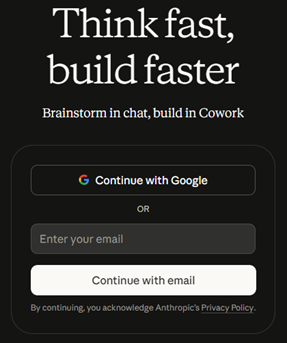
Αποδοχή όρων και επιβεβαίωση ηλικίας
Στη συνέχεια, αποδέχεστε τους όρους χρήσης και την πολιτική απορρήτου της εταιρείας. Ο λογαριασμός σας είναι πλέον έτοιμος προς χρήση.
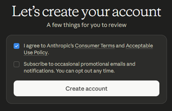
Μετά την αποδοχή των όρων, το Claude ζητάει από τον χρήστη να συμπληρώσει την ημερομηνία γέννησής του, προκειμένου να διαπιστωθεί ότι πληρείτε τα απαραίτητα ηλικιακά κριτήρια για τη χρήση της υπηρεσίας.
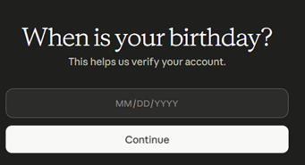
Η οθόνη «Claude for desktop»
Μετά την επιβεβαίωση της ηλικίας, το σύστημα σας μεταφέρει στην οθόνη προώθησης της desktop εφαρμογής («Get the most out of Claude on your desktop»). Από εδώ μπορείτε να κατεβάσετε απευθείας την έκδοση για το λειτουργικό σας σύστημα (π.χ. Download for Windows) ή να επιλέξετε «Skip» για να συνεχίσετε στο περιβάλλον του browser σας.
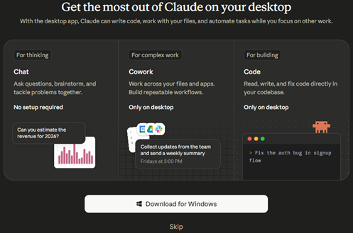
«Before your first chat»
Επιλέγοντας Skip στην προηγούμενη οθόνη, στη συνέχεια το Claude εμφανίζει ένα ακόμη παράθυρο με τίτλο «Before your first chat», το οποίο περιλαμβάνει μερικά πράγματα που πρέπει να γνωρίζετε, συν μια ρύθμιση που πρέπει να ελέγξετε.
Η εταιρεία ξεκαθαρίζει ότι δεν εμφανίζει διαφημίσεις και δεν επιτρέπει σε διαφημιστές να επηρεάζουν τις απαντήσεις του Claude.
Επισημαίνεται η ύπαρξη αυτοματοποιημένων δικλείδων ασφαλείας που προστατεύουν τις συνομιλίες σας από βίαιο, υβριστικό ή παραπλανητικό περιεχόμενο.
Στο σημείο αυτό υπάρχει ένας ενεργοποιημένος διακόπτης (toggle). Αν τον αφήσετε ενεργό, επιτρέπετε στην Anthropic να χρησιμοποιεί τις συνομιλίες και τις συνεδρίες κώδικά σας για την εκπαίδευση και τη βελτίωση του Claude. Μπορείτε να τον απενεργοποιήσετε αμέσως αν επιθυμείτε απόλυτη ιδιωτικότητα, ενώ η εταιρεία υπενθυμίζει ότι η ρύθμιση αυτή αλλάζει ανά πάσα στιγμή μέσα από τα Privacy Settings.
Πατώντας το κουμπί «Continue», ολοκληρώνεται η διαδικασία και εισέρχεστε πλέον στο επίσημο περιβάλλον εργασίας.
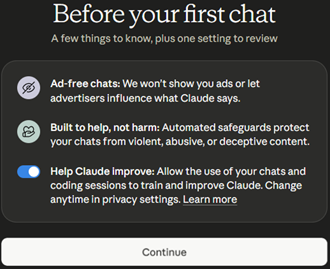
Πληκτρολογήστε το όνομά σας
Μετά την ολοκλήρωση των ρυθμίσεων ιδιωτικότητας, εμφανίζεται η επόμενη οθόνη στην οποία καλείστε να πληκτρολογήσετε το όνομά σας ή το όνομα που προτιμάτε. Το όνομα αυτό είναι ο τρόπος με τον οποίο το Claude θα γνωρίζει πώς να σας καλωσορίζει και να απευθύνεται σε εσάς κατά τη διάρκεια των συνεδριών σας.
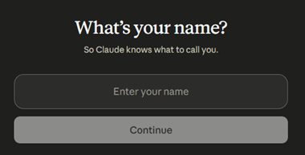
«What kind of work do you do?»
Αμέσως μετά, το Claude σας ζητά να καθορίσετε το επαγγελματικό σας προφίλ μέσα από την οθόνη με τίτλο «What kind of work do you do?».
Σκοπός αυτού του βήματος είναι να βοηθήσετε την πλατφόρμα να προσαρμόσει την εμπειρία σας (tailor your experience) στις δικές σας ανάγκες. Πατώντας στο αναπτυσσόμενο μενού «Select your role», καλείστε να επιλέξετε την ειδικότητα ή τον τομέα εργασίας σας. Με αυτόν τον τρόπο, το μοντέλο αντιλαμβάνεται καλύτερα το υπόβαθρό σας και μπορεί να παρέχει πιο στοχευμένες και σχετικές απαντήσεις στις μελλοντικές σας συνομιλίες.
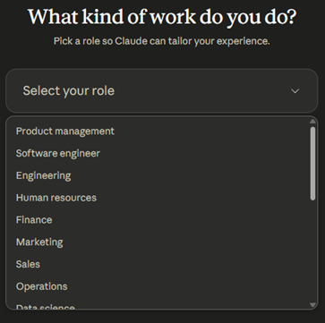
Προτάσεις προσαρμοσμένες στο επάγγελμά σας
Σε αυτό το σημείο, το Claude προτείνει ορισμένες προτάσεις σχετικά με το επάγγελμα που επιλέξατε, ώστε να προσαρμόσει την εμπειρία του. Ενδεικτικά εμφανίζονται:
Plan my week
Οργάνωση και προγραμματισμός των δραστηριοτήτων της εβδομάδας σας.
Weigh a hard decision
Ανάλυση δεδομένων για βοήθεια στη λήψη μιας δύσκολης απόφασης.
Explain, then quiz me
Επεξήγηση μιας έννοιας και στη συνέχεια δημιουργία ενός σύντομου τεστ γνώσεων (quiz) για εμπέδωση.
«I have my own topic» και καλωσόρισμα
Αν δεν επιθυμείτε να χρησιμοποιήσετε καμία από τις προκαθορισμένες επιλογές, στο κάτω μέρος της οθόνης υπάρχει η επιλογή «I have my own topic» (Έχω το δικό μου θέμα). Πατώντας την, παρακάμπτετε τις προτάσεις του συστήματος και μεταφέρεστε απευθείας στο κεντρικό περιβάλλον εργασίας, ώστε να πληκτρολογήσετε τη δική σας, ελεύθερη οδηγία.
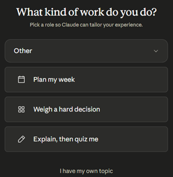
Τέλος, μεταφέρεστε πλέον στο επίσημο περιβάλλον εργασίας με ένα μήνυμα καλωσορίσματος.
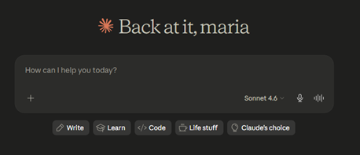
Βάλτε τα βήματα στη σωστή σειρά
Τοποθετήστε τα βήματα της δημιουργίας λογαριασμού στη σωστή σειρά (κάντε κλικ στα βήματα με τη σειρά που εκτελούνται):
Εγκατάσταση της Εφαρμογής σε Υπολογιστή (Desktop App)
Για να μεγιστοποιήσετε την παραγωγικότητά σας, η Anthropic προσφέρει αυτόνομες εφαρμογές που σας επιτρέπουν να χρησιμοποιείτε το Claude χωρίς να εξαρτάστε από τον browser σας, διατηρώντας παράλληλα το ιστορικό σας πλήρως συγχρονισμένο σε όλες τις συσκευές.
Εγκατάσταση σε Υπολογιστή (Desktop App)
Εάν κατά τη διάρκεια της αρχικής εγγραφής επιλέξατε να προσπεράσετε («Skip») τη λήψη της εφαρμογής για τον υπολογιστή, η πλατφόρμα σάς δίνει τη δυνατότητα να την κατεβάσετε ανά πάσα στιγμή μέσα από το κεντρικό περιβάλλον εργασίας.
Η διαδικασία είναι εξαιρετικά απλή
- Στην αριστερή πλευρική μπάρα (sidebar) της οθόνης, εντοπίστε την ενότητα «Try the basics».
- Στο συγκεκριμένο μενού εμφανίζονται τρεις προτεινόμενες ενέργειες. Επιλέγετε την τρίτη κατά σειρά επιλογή, με την ένδειξη «Get the desktop app» (Hand off tasks, code with Claude, and do more from your desktop).
- Κάνοντας κλικ σε αυτή την επιλογή, ξεκινά αυτόματα η λήψη του αρχείου εγκατάστασης (π.χ. Claude Install) στον υπολογιστή σας.
- Μόλις ολοκληρωθεί η λήψη, εντοπίζετε το αρχείο στον φάκελο «Λήψεις» (Downloads), το εκτελείτε και ακολουθείτε τα σύντομα βήματα εγκατάστασης.
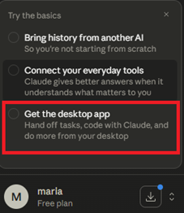
Το πρώτο άνοιγμα της desktop εφαρμογής
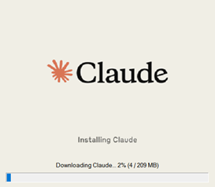
Μόλις ολοκληρωθεί η εγκατάσταση και ανοίξετε για πρώτη φορά την εφαρμογή για υπολογιστή (desktop app), θα παρατηρήσετε ότι το περιβάλλον διαφέρει ελαφρώς από τη web έκδοση, καθώς εστιάζει στην ενισχυμένη παραγωγικότητα. Η αρχική οθόνη είναι προσανατολισμένη στη λειτουργία Cowork.
Η αναλυτική λειτουργία του Cowork, καθώς και ο τρόπος με τον οποίο οργανώνονται οι εργασίες εντός της desktop εφαρμογής, θα παρουσιαστούν διεξοδικά σε επόμενο κεφάλαιο του οδηγού.
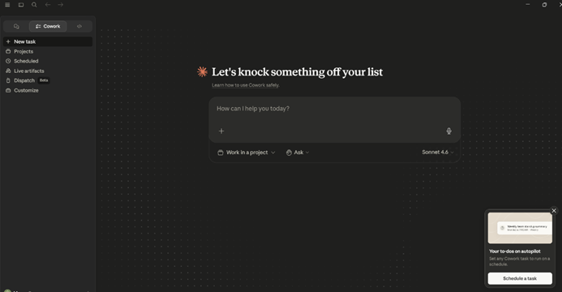
Εγκατάσταση σε Κινητές Συσκευές (Smartphones & Tablets)
Η εγκατάσταση του Claude στην κινητή σας συσκευή αποτελεί μια απλή και γρήγορη διαδικασία, επιτρέποντάς σας να έχετε τον ψηφιακό σας βοηθό διαθέσιμο ανά πάσα στιγμή, εν κινήσει. Η εφαρμογή διατίθεται δωρεάν για τα δύο κορυφαία λειτουργικά συστήματα.
Για συσκευές Android:
- Μεταβείτε στο ψηφιακό κατάστημα Google Play Store της συσκευής σας.
- Πραγματοποιήστε αναζήτηση πληκτρολογώντας "Claude". Βεβαιωθείτε ότι ως κατασκευαστής (developer) αναγράφεται η εταιρεία Anthropic, προς αποφυγή λήψης ανεπίσημων ή παραπλανητικών εφαρμογών.
- Επιλέξτε Εγκατάσταση (Install).
- Μετά την ολοκλήρωση της λήψης, ανοίξτε την εφαρμογή για να συνδεθείτε στον υπάρχοντα λογαριασμό σας ή να δημιουργήσετε έναν νέο.
Για συσκευές Apple (iPhone / iPad)
- Ανοίξτε το ψηφιακό κατάστημα App Store.
- Αναζητήστε την εφαρμογή με τον όρο "Claude" (επαληθεύοντας ξανά την Anthropic ως δημιουργό).
- Πατήστε Λήψη (Get).
- Μόλις ολοκληρωθεί η διαδικασία, ανοίξτε την εφαρμογή και προχωρήστε στην είσοδο ή την εγγραφή σας.
Εναλλακτικός και Ταχύτερος Τρόπος Εγκατάστασης Claude App (Μέσω QR Code)
Εάν βρίσκεστε ήδη συνδεδεμένοι στο Claude μέσω του υπολογιστή σας (browser), υπάρχει ένας πιο άμεσος τρόπος να εγκαταστήσετε την εφαρμογή στο κινητό σας, αποφεύγοντας τη χειροκίνητη αναζήτηση στα ψηφιακά καταστήματα:
- Στο περιβάλλον εργασίας του browser, μεταβείτε στην αριστερή πλευρική μπάρα.
- Κάντε κλικ στο προφίλ/όνομα του λογαριασμού σας (κάτω αριστερά) και από το μενού που θα ανοίξει επιλέξτε «Get apps and extensions».
- Στην ενότητα που αφορά τις κινητές συσκευές (Mobile), επιλέξτε τη λήψη (Download) για το λειτουργικό σύστημα του smartphone σας (Android ή iOS).
- Στην οθόνη του υπολογιστή σας θα εμφανιστεί αμέσως ένας κωδικός QR (Take Claude on the go).
- Ανοίξτε την κάμερα του κινητού σας τηλεφώνου και σκανάρετε τον κωδικό QR.
Λήψη εφαρμογής και κωδικός QR
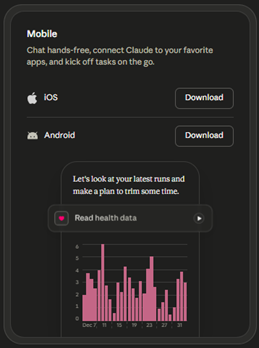
Η πρώτη σου συνομιλία
Το συχνότερο σφάλμα κατά την πρώτη επαφή με ένα Μεγάλο Γλωσσικό Μοντέλο (LLM) είναι η αντιμετώπισή του ως μια απλή μηχανή αναζήτησης. Το Claude δεν αναζητά απλώς λέξεις-κλειδιά, αλλά κατανοεί φυσική γλώσσα και πλαίσιο (context). Για να λάβετε μια χρήσιμη απάντηση, η πρώτη σας οδηγία (prompt) πρέπει να είναι όσο το δυνατόν πιο σαφής.
Ελλιπής οδηγία από τον χρήστη
«Συγγραφή επαγγελματικού email»
Όπως φαίνεται και στο παρακάτω παράδειγμα, εάν εισάγετε μια τόσο ελλιπή οδηγία, το Claude είναι προγραμματισμένο να αναγνωρίζει την απουσία πληροφοριών. Αντί να προσπαθήσει να μαντέψει τυχαία τι θέλετε, θα ενεργοποιήσει έναν μηχανισμό υποβοήθησης. Θα σας εμφανίσει ένα μενού επιλογών, ρωτώντας σας για τον σκοπό του email (π.χ. Αίτηση εργασίας, Συνεργασία/Πρόταση, Παρακολούθηση/Follow-up κ.λπ.), προσπαθώντας να σας καθοδηγήσει να του δώσετε το απαραίτητο πλαίσιο.
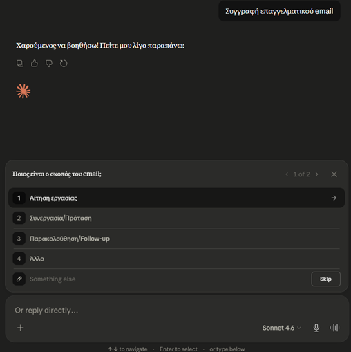
Η ορθή πρακτική
Για να αποφύγετε αυτή την διαδικασία και να έχετε το επιθυμητό αποτέλεσμα άμεσα, προτείνεται η χρήση της ορθής πρακτικής (Λογική Ψηφιακού Βοηθού):
«Ανάλαβε τον ρόλο ενός υπεύθυνου ανθρώπινου δυναμικού. Γράψε ένα σύντομο και επίσημο email προς έναν υποψήφιο, ενημερώνοντάς τον ότι πέρασε επιτυχώς στο δεύτερο στάδιο των συνεντεύξεων. Το ύφος πρέπει να είναι ενθαρρυντικό αλλά επαγγελματικό.»
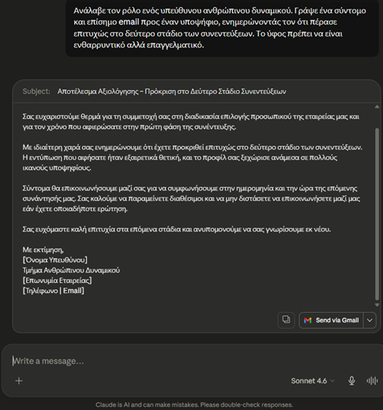
Μια εξαιρετικά πρακτική λεπτομέρεια
Στο συγκεκριμένο παράδειγμα αξίζει να σταθούμε σε μια εξαιρετικά πρακτική λεπτομέρεια. Όπως παρατηρείτε στην κάτω δεξιά γωνία του πλαισίου της απάντησης, το Claude εμφανίζει το κουμπί «Send via Gmail» (Αποστολή μέσω Gmail) και επιλέγοντας το βελάκι έχει και την επιλογή «Open in Mail».
Αξιοποιώντας τις δυνατότητες διασύνδεσης της πλατφόρμας (ένα θέμα που θα αναλύσουμε διεξοδικά σε επόμενο κεφάλαιο), το Claude σας επιτρέπει να προωθήσετε το κείμενο απευθείας στον λογαριασμό σας, έτοιμο προς αποστολή. Αυτή η αυτοματοποίηση καταργεί την παραδοσιακή διαδικασία της μηχανικής αντιγραφής και επικόλλησης (copy-paste), βελτιστοποιώντας σημαντικά την καθημερινή σας ροή εργασίας.
Παράλειψη της Ανατροφοδότησης (Follow-up)
Ένα από τα πιο συνηθισμένα σφάλματα των νέων χρηστών είναι η προσέγγιση της τεχνητής νοημοσύνης με τη νοοτροπία της «μιας και μόνο εντολής». Συχνά, εάν η πρώτη απάντηση του Claude δεν ανταποκρίνεται απόλυτα στις προσδοκίες τους, ο χρήστης θεωρεί ότι το εργαλείο δεν είναι κατάλληλο και είτε εγκαταλείπει τη συνομιλία, είτε προσπαθεί να ξεκινήσει από την αρχή με μια νέα, διαφορετική οδηγία. Είναι κρίσιμο να αντιλαμβάνεστε το Claude ως έναν συνεργάτη με τον οποίο διεξάγετε διάλογο. Η πρώτη απάντηση που λαμβάνετε αποτελεί συχνά μόνο την «πρώτη προσέγγιση» του μοντέλου.
«Σμιλεύοντας» την απάντηση με follow-up prompts
Αντί να απορρίψετε το αποτέλεσμα, μάθετε να «σμιλεύετε» την απάντηση μέσω συμπληρωματικών οδηγιών (follow-up prompts). Για παράδειγμα:
- Αν η απάντηση είναι υπερβολικά τεχνική, ζητήστε: «Γράψε το ίδιο κείμενο πιο απλά, ώστε να γίνει κατανοητό από κάποιον χωρίς τεχνικό υπόβαθρο».
- Σε περίπτωση που το περιεχόμενο είναι εκτενές, ζητήστε: «Κάνε το κείμενο πιο συνοπτικό, διατηρώντας μόνο τα κύρια σημεία».
- Αν το ύφος δεν ταιριάζει στο πλαίσιο, ζητήστε: «Μετάτρεψε το ύφος σε πιο επίσημο/φιλικό/περιγραφικό».
Η ποιότητα του τελικού παραδοτέου εξαρτάται άμεσα από τη δική σας ικανότητα να καθοδηγείτε το μοντέλο. Η αποτελεσματική αλληλεπίδραση είναι μια επαναληπτική διαδικασία (iterative process), όσο περισσότερο «εκπαιδεύετε» το μοντέλο μέσα στην ίδια συνομιλία, τόσο πιο κοντά στο επιθυμητό αποτέλεσμα φτάνετε.
Εργαλεία Ελέγχου της Απάντησης (Chat Controls)
Κάτω από κάθε απάντηση που σας δίνει το Claude, θα παρατηρήσετε μια σειρά από διακριτικά εικονίδια. Αυτά τα εργαλεία έχουν σχεδιαστεί για να διευκολύνουν τη διαχείριση του παραγόμενου κειμένου και την αλληλεπίδρασή σας με το μοντέλο:
Αντιγραφή (Copy)
Το πρώτο εικονίδιο (δύο επικαλυπτόμενα τετράγωνα) είναι ένα αρκετά χρήσιμο εργαλείο για κάθε χρήστη. Με ένα μόνο κλικ, αντιγράφει ολόκληρο το κείμενο της απάντησης στο πρόχειρο (clipboard). Έτσι, μπορείτε να το επικολλήσετε άμεσα σε ένα έγγραφο Word, σε ένα email ή σε οποιαδήποτε άλλη εφαρμογή, αποφεύγοντας την κουραστική χειροκίνητη επιλογή του κειμένου (drag and drop).
Αξιολόγηση (Thumbs Up / Thumbs Down)
Τα δύο μεσαία εικονίδια σάς επιτρέπουν να αξιολογήσετε την ποιότητα της απάντησης (θετικά ή αρνητικά). Η ανατροφοδότηση αυτή είναι ανώνυμη και βοηθά την Anthropic να βελτιώνει συνεχώς την απόδοση του συστήματος.
Νέα Εκδοχή / Επανάληψη (Retry)
Το τελευταίο εικονίδιο (το κυκλικό βέλος) είναι εξαιρετικά πρακτικό εάν δεν είστε ικανοποιημένοι με το αποτέλεσμα. Πατώντας το, δίνετε εντολή στο Claude να διαγράψει νοητά τη συγκεκριμένη απάντηση και να δημιουργήσει μια εντελώς νέα, βασισμένη στην ίδια ακριβώς αρχική σας οδηγία, δίνοντάς σας μια νέα οπτική.
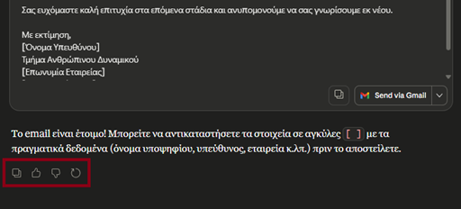
Ερώτηση κατανόησης
Τι κάνει το εικονίδιο με το κυκλικό βέλος (Retry) κάτω από μια απάντηση;
Η Διαχείριση της Συνομιλίας (Ιστορικό και Μετονομασία)
Ένα από τα κύρια πλεονεκτήματα του Claude είναι η δυνατότητα διατήρησης του ιστορικού των αλληλεπιδράσεών σας. Ο νέος χρήστης συχνά ανησυχεί για την αποθήκευση των δεδομένων του, ωστόσο η διαδικασία είναι πλήρως αυτοματοποιημένη:
Κάθε νέα συνομιλία αποθηκεύεται αυτόματα στην αριστερή πλευρική μπάρα (sidebar) της εφαρμογής. Δεν απαιτείται καμία χειροκίνητη ενέργεια για τη διασφάλιση των δεδομένων σας.
Μετά το πρώτο μήνυμα που θα ανταλλάξετε, το Claude αναλύει το περιεχόμενο και αναθέτει αυτόματα έναν τίτλο στη συνομιλία, ώστε να μπορείτε να την αναγνωρίσετε εύκολα αργότερα. Ωστόσο, για καλύτερη οργάνωση του αρχείου σας, μπορείτε να μετονομάσετε τη συνομιλία ανά πάσα στιγμή. Μεταβείτε στην αριστερή πλευρική μπάρα, εντοπίστε τη συνομιλία που σας ενδιαφέρει, επιλέξτε τις τρεις τελείες που βρίσκονται δίπλα στον τίτλο της και επιλέξτε «Rename» (Μετονομασία).
Το σύστημα παρέχει επιπλέον δυνατότητες διαχείρισης. Από το ίδιο μενού μπορείτε να διαγράψετε μια συνομιλία που δεν χρειάζεστε πλέον.
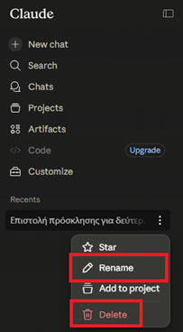
Βασικοί κανόνες καλού prompting
Για να αντλήσετε τη μέγιστη δυνατή αξία από το Claude, δεν αρκεί απλώς να θέτετε μια ερώτηση. Απαιτείται η δομημένη διατύπωση οδηγιών (prompting) που παρέχουν στο μοντέλο όλα τα απαραίτητα εφόδια για να παράγει ένα ποιοτικό αποτέλεσμα.
Η διαφορά μεταξύ ενός μέτριου και ενός εξαιρετικού αποτελέσματος έγκειται στην εφαρμογή των τεσσάρων πυλώνων του καλού prompt.
Κάθε φορά που συντάσσετε μια οδηγία, προσπαθήστε να συμπεριλάβετε τα παρακάτω τέσσερα στοιχεία:
Οι τέσσερις πυλώνες του καλού prompt
Αναβαθμίζοντας το Prompt: Από το Μέτριο στο Εξαιρετικό
Ας δούμε πρακτικά πώς η εφαρμογή αυτών των πυλώνων μεταμορφώνει το αποτέλεσμα.
«Γράψε μου μια ανάλυση για τις ανανεώσιμες πηγές ενέργειας.»
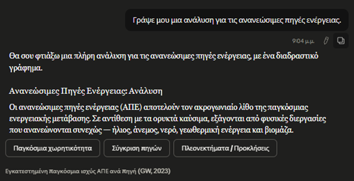
Εξειδικευμένο Prompt (Εφαρμογή των 4 Πυλώνων)
«(Ρόλος) Ενέργησε ως ειδικός σύμβουλος περιβαλλοντικής πολιτικής. (Πλαίσιο) Απευθύνομαι σε ένα κοινό επιχειρηματιών που δεν έχουν τεχνική κατάρτιση. (Στόχος) Συνέταξε μια ανάλυση 300 λέξεων για τα πλεονεκτήματα της ηλιακής ενέργειας στην Ελλάδα, εστιάζοντας στο οικονομικό όφελος. (Παράδειγμα) Χρησιμοποίησε δομή με τίτλους και bullet points, όπως ακριβώς σε ένα επαγγελματικό executive summary.»
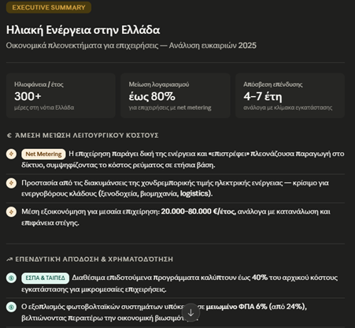
2ο Παράδειγμα: Εφαρμογή στον τομέα του Digital Marketing
«Δώσε μου ιδέες για social media posts για ένα e-shop με ρούχα.»
«(Ρόλος) Ενέργησε ως έμπειρος Social Media Strategist. (Πλαίσιο) Το brand μου αφορά βιώσιμη μόδα (sustainable fashion) για γυναίκες 25-40 ετών που ενδιαφέρονται για το περιβάλλον. (Στόχος) Δημιούργησε ένα πρόγραμμα περιεχομένου για 3 ημέρες, με σκοπό την αύξηση του engagement και την εκπαίδευση του κοινού για την αξία των οργανικών υλικών. (Παράδειγμα) Χρησιμοποίησε μια δομή με: [Τίτλο Post], [Κείμενο λεζάντας - με τόνο εμπνευσμένο αλλά φιλικό], [Πρόταση για το είδος του visual/video] και [Hashtags].»
Αναγνωρίστε τους πυλώνες
Συμπληρώστε ποιον πυλώνα εκφράζει κάθε τμήμα του prompt:
«Ενέργησε ως διατροφολόγος» →
«Απευθύνομαι σε αθλητές που προπονούνται πρωί» →
«Συνέταξε εβδομαδιαίο πρόγραμμα γευμάτων» →
«Παρουσίασέ το σε πίνακα με στήλες Ημέρα/Γεύμα/Θερμίδες» →
Συμπέρασμα
Το μέτριο prompt περιορίζεται σε μια αυτονόητη και γενικόλογη λίστα ιδεών, ενώ το εξειδικευμένο prompt λειτουργεί ως ειδικός συνεργάτης. Με τα δεδομένα που του δώσαμε (ρόλο, πλαίσιο, στόχο και δομή), το Claude δεν προτείνει απλώς τι να κάνουμε, αλλά παράγει μια ολοκληρωμένη στρατηγική πρόταση που είναι άμεσα εφαρμόσιμη και απόλυτα ευθυγραμμισμένη με το κοινό και τους στόχους της επιχείρησής μας.
Settings που πρέπει να ξέρεις από την αρχή
Η σωστή παραμετροποίηση του Claude αποτελεί το πρώτο και σημαντικότερο βήμα για τη μετάβαση από έναν περιστασιακό χρήστη σε έναν αποδοτικό συνεργάτη τεχνητής νοημοσύνης. Οι ρυθμίσεις της πλατφόρμας δεν είναι απλώς τεχνικές επιλογές, είναι ο μηχανισμός μέσα από τον οποίο «διδάσκετε» στο Claude τον δικό σας τρόπο εργασίας, τις προτιμήσεις σας και τις ανάγκες σας.
Η αφιέρωση χρόνου στη διαμόρφωση των ρυθμίσεων (User Preferences) από την αρχή είναι καθοριστικής σημασίας για τους εξής λόγους:
1. Εξατομίκευση (Personalization)
Καθορίζοντας το επιθυμητό ύφος, τη γλώσσα και τη δομή των απαντήσεων, το Claude προσαρμόζεται αυτόματα στο προφίλ σας, απαλλάσσοντάς σας από την ανάγκη να επαναλαμβάνετε τις προτιμήσεις σας σε κάθε νέα συνομιλία.
2. Βελτιστοποίηση Ροής Εργασίας
Μέσω των σωστών ρυθμίσεων, μπορείτε να έχετε άμεση πρόσβαση στα εργαλεία και τις διασυνδέσεις που χρησιμοποιείτε καθημερινά, αυξάνοντας κατακόρυφα την παραγωγικότητά σας.
3. Έλεγχος και Διαφάνεια
Η εξοικείωση με τις δυνατότητες (capabilities) και τα όρια χρήσης (usage) σας επιτρέπει να διαχειρίζεστε το Claude με σύνεση, γνωρίζοντας ακριβώς τι μπορεί να προσφέρει και ποια είναι η διαθεσιμότητά του.
4. Ιδιωτικότητα
Η κατανόηση των ρυθμίσεων ασφαλείας σάς δίνει τον απόλυτο έλεγχο πάνω στον τρόπο με τον οποίο τα δεδομένα σας αλληλεπιδρούν με το σύστημα, διασφαλίζοντας την εμπιστευτικότητα των συνομιλιών σας.
Στην παρούσα ενότητα, θα περιηγηθούμε αναλυτικά στο μενού των ρυθμίσεων, ώστε να αποκτήσετε την πλήρη εποπτεία του περιβάλλοντος εργασίας σας και να διαμορφώσετε το Claude σύμφωνα με τις δικές σας απαιτήσεις.
Custom Instructions
Τα Custom Instructions (Προσαρμοσμένες Οδηγίες) είναι ουσιαστικά ο «προγραμματισμός» του Claude με βάση τις δικές σας ανάγκες. Αντί να εξηγείτε σε κάθε νέα συνομιλία ότι θέλετε απαντήσεις στα ελληνικά, με συγκεκριμένο επαγγελματικό ύφος και δομή, εισάγετε αυτές τις οδηγίες μία φορά στο πεδίο «Instructions for Claude».
Συνέπεια: Το Claude διατηρεί το ύφος, το στυλ γραφής και τη δομή των απαντήσεων που επιθυμείτε σε κάθε αλληλεπίδραση. Δεν χρειάζεται πλέον να δίνετε επανειλημμένα οδηγίες ή να διορθώνετε το μοντέλο, καθώς οι βασικές προτιμήσεις σας (όπως η γλώσσα, ο βαθμός επισημότητας ή ο τρόπος παρουσίασης των δεδομένων) είναι ενσωματωμένες στις μόνιμες παραμέτρους του συστήματος.
Εξοικονόμηση Χρόνου: Κάθε prompt που στέλνετε είναι ήδη «προσαρμοσμένο» από το σύστημα. Δεν σπαταλάτε τις πρώτες σειρές του διαλόγου δίνοντας οδηγίες για το πώς θέλετε να εργαστεί το μοντέλο.
Ποιότητα Αποτελεσμάτων: Ορίζοντας σαφή πλαίσια (π.χ. "είσαι έμπειρος μηχανικός λογισμικού, πάντα να παρέχεις σχολιασμένο κώδικα"), το Claude λειτουργεί εξαρχής με τον κατάλληλο ρόλο, παράγοντας πιο ακριβή και εξειδικευμένα αποτελέσματα.
Στο πεδίο των Custom Instructions, μπορείτε να γράψετε οτιδήποτε καθορίζει την εργασία σας. Για παράδειγμα: «Απαντάς πάντα στα Ελληνικά.», «Το ύφος σου είναι επίσημο και επαγγελματικό, κατάλληλο για ακαδημαϊκό ή επιχειρηματικό πλαίσιο.», «Στις τεχνικές αναλύσεις, να χρησιμοποιείς πάντα δομή με bullet points για καλύτερη αναγνωσιμότητα.», «Πριν δώσεις μια λύση, σκέψου βήμα-βήμα (Chain of Thought).»
Διαφορετικές οδηγίες ανά Project
Σημείωση: Αν χρησιμοποιείτε διαφορετικά Projects για διαφορετικές ανάγκες (π.χ. ένα για Αυτοματοποίηση Διοικητικών Διαδικασιών και ένα για Business Process Modeling σε BPMN), μπορείτε να ορίσετε διαφορετικές Custom Instructions σε κάθε Project, ώστε το Claude να αλλάζει "προσωπικότητα" ανάλογα με το θέμα.
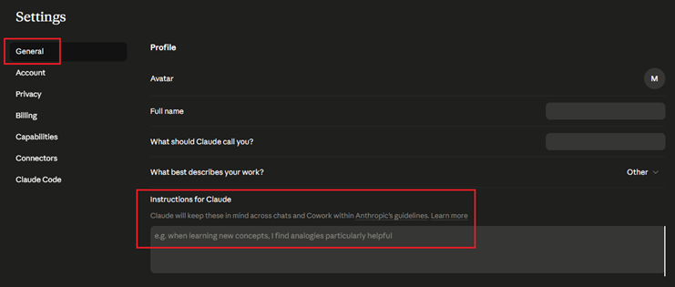
Ερώτηση κατανόησης
Θέλετε το Claude να απαντά πάντα στα ελληνικά με επίσημο ύφος, χωρίς να το ζητάτε κάθε φορά. Ποια ρύθμιση θα χρησιμοποιήσετε;
Appearance (Εμφάνιση)
Η επιλογή της κατάλληλης οπτικής διεπαφής δεν αφορά μόνο την αισθητική, αλλά τη βελτιστοποίηση της εργονομίας και της συγκέντρωσής σας κατά τη διάρκεια της εργασίας. Το Claude παρέχει τη δυνατότητα παραμετροποίησης του περιβάλλοντος (Theme), επιτρέποντάς σας να προσαρμόσετε την εμφάνιση στις συνθήκες φωτισμού του χώρου σας.
Επιλογές Διαμόρφωσης:
Dark Mode (Σκοτεινό Θέμα)
Ιδανικό για εργασία σε περιβάλλοντα με χαμηλό φωτισμό ή κατά τη διάρκεια νυχτερινών ωρών.
Light Mode (Φωτεινό Θέμα)
Κατάλληλο για εργασία σε χώρους με έντονο φυσικό φως, καθώς προσφέρει υψηλή αντίθεση και ευκρίνεια.
System Default (Αυτόματη ρύθμιση)
Επιλέγοντας αυτή την επιλογή, το Claude θα προσαρμόζει αυτόματα το θέμα του (Dark ή Light) βάσει των ρυθμίσεων του λειτουργικού συστήματος της συσκευής σας. Εάν εργάζεστε εναλλάξ σε διαφορετικά περιβάλλοντα, καθώς διασφαλίζει ότι η εφαρμογή θα ακολουθεί πάντα το «πρότυπο» που έχετε ορίσει για το σύνολο των εφαρμογών σας.
Data Controls & Privacy
Η κατηγορία στις πρακτικές διαχείρισης δεδομένων αποτελεί θεμελιώδη πυλώνα της Anthropic. Η κατανόηση των ρυθμίσεων ιδιωτικότητας δεν είναι προαιρετική, αλλά αναγκαία προϋπόθεση για τη συμμόρφωση με τον επαγγελματικό δεοντολογικό κώδικα και την ασφάλεια των πληροφοριών που εισάγει στο σύστημα.
Επιτρέποντας τη χρήση γενικευμένων δεδομένων τοποθεσίας (πόλη/περιοχή), το Claude μπορεί να παρέχει πιο σχετικές απαντήσεις βάσει του γεωγραφικού σας πλαισίου. Σύσταση: Εάν εργάζεστε με δεδομένα που απαιτούν αυστηρή τοπική ανωνυμία, απενεργοποιήστε αυτή την επιλογή.
Αυτή είναι η πιο κρίσιμη ρύθμιση. Όταν είναι ενεργοποιημένη, οι συνομιλίες σας και οι συνεδρίες κώδικα μπορεί να χρησιμοποιηθούν από την Anthropic για την εκπαίδευση μελλοντικών μοντέλων. Θα πρέπει να γνωρίζετε, πως εάν εισάγετε ευαίσθητα εταιρικά δεδομένα ή προσωπικά στοιχεία (ωστόσο δεν θα πρέπει ποτέ να εισάγετε προσωπικά σας δεδομένα), προτείνεται η απενεργοποίηση αυτής της λειτουργίας. Με τον τρόπο αυτό, διασφαλίζετε ότι οι πληροφορίες σας παραμένουν ιδιωτικές και δεν εισέρχονται στον κύκλο εκπαίδευσης του μοντέλου.
Το Claude σάς παρέχει τη δυνατότητα να εξάγετε ολόκληρο το ιστορικό των συνομιλιών σας. Αυτή η λειτουργία είναι χρήσιμη για σκοπούς αρχειοθέτησης ή μεταφοράς δεδομένων σε άλλο περιβάλλον.
Μέσω αυτού του διαχειριστικού μενού, μπορείτε να δείτε ποιες συνομιλίες έχετε μοιραστεί με τρίτους και να ανακαλέσετε την πρόσβαση σε αυτές, διασφαλίζοντας ότι έχετε τον έλεγχο των πληροφοριών που έχετε διαμοιράσει.
Αυτή η λειτουργία επιτρέπει στο Claude να "θυμάται" συγκεκριμένες πληροφορίες για εσάς σε βάθος χρόνου, καθιστώντας τις μελλοντικές αλληλεπιδράσεις πιο προσωποποιημένες. Μπορείτε να διαχειριστείτε ή να διαγράψετε αυτές τις αναμνήσεις ανά πάσα στιγμή από το μενού Manage.
Βέλτιστη πρακτική
Σημείωση! Η βέλτιστη πρακτική είναι να αξιολογείτε ανά τακτά χρονικά διαστήματα τις ρυθμίσεις σας. Εάν το περιεχόμενο της εργασίας σας περιλαμβάνει δεδομένα υπό καθεστώς εμπιστευτικότητας, βεβαιωθείτε ότι η επιλογή «Help improve Claude» είναι απενεργοποιημένη και ελέγχετε περιοδικά τα "Shared Chats" για να διασφαλίσετε ότι δεν υπάρχουν ενεργοί σύνδεσμοι προς ευαίσθητες πληροφορίες.
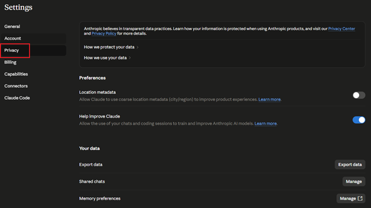
Capabilities
Οι «Capabilities» αποτελούν τον τρόπο με τον οποίο το Claude λειτουργεί στις συνομιλίες σας. Είναι σημαντικό να αντιληφθείτε ότι οι ρυθμίσεις αυτές δεν καθορίζουν μόνο το εύρος των λειτουργιών του μοντέλου, αλλά επηρεάζουν άμεσα και τον τρόπο με τον οποίο το σύστημα επεξεργάζεται τα δεδομένα σας. Το μενού αυτό σάς επιτρέπει να ορίσετε το πλαίσιο δράσης του Claude, μετατρέποντάς το από έναν απλό συνομιλητή σε έναν εξειδικευμένο ψηφιακό συνεργάτη, ικανό να αναλύει δεδομένα, να εκτελεί κώδικα και να οπτικοποιεί σύνθετες πληροφορίες.
- Generate memory from chat history: Επιτρέπει στο Claude να «θυμάται» σημαντικές πληροφορίες από προηγούμενες συνομιλίες σας, χτίζοντας ένα πλαίσιο που κάνει τις απαντήσεις του πιο εύστοχες με την πάροδο του χρόνου.
- Import memory: Δυνατότητα μεταφοράς πλαισίου από άλλους AI παρόχους, ώστε να μην ξεκινάτε την εκπαίδευση του βοηθού σας από το μηδέν.
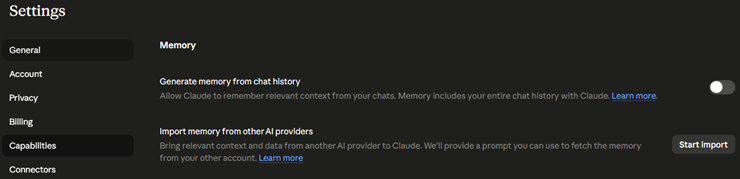
Στο υπομενού αυτό διαχειρίζεστε τον τρόπο με τον οποίο το Claude αλληλεπιδρά με τα εξωτερικά εργαλεία (connectors) που έχετε συνδέσει.
- Tool access mode: Καθορίζει πώς φορτώνονται τα εργαλεία συνδεσιμότητας (connectors) στις νέες συνομιλίες σας. Επιλέγοντας "Load tools when needed", το Claude ενεργοποιεί τα απαραίτητα εργαλεία μόνο όταν η φύση της ερώτησής σας απαιτεί εξωτερική πρόσβαση. Αυτό εξασφαλίζει μεγαλύτερη ταχύτητα απόκρισης και καλύτερη διαχείριση των πόρων.
- Connector discovery: Ενεργοποιώντας αυτή τη ρύθμιση, δίνετε στο Claude την άδεια να «ανακαλύπτει» και να σας προτείνει μόνο του ποιοι διαθέσιμοι σύνδεσμοι (connectors) από τον κατάλογο της εφαρμογής μπορεί να είναι χρήσιμοι για την τρέχουσα συνομιλία σας. Είναι ένας αποτελεσματικός τρόπος για να ανακαλύψετε αυτοματισμούς που ίσως δεν γνωρίζατε ότι είναι διαθέσιμοι για τις εργασίες σας.
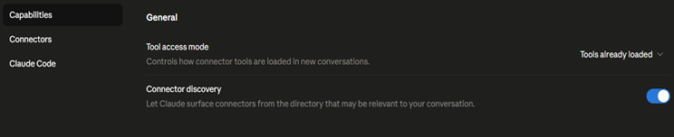
Στο τμήμα των Visuals, καθορίζετε τον τρόπο με τον οποίο το Claude παρουσιάζει τα παραδοτέα του, αναβαθμίζοντας την αλληλεπίδραση από ένα απλό κείμενο σε μια πολυμεσική εμπειρία.
- Artifacts: Μια από τις ισχυρότερες λειτουργίες του Claude. Όταν είναι ενεργοποιημένο, το Claude μπορεί να δημιουργεί κώδικα, έγγραφα, ή προσχέδια σχεδίων σε ένα ειδικό, διακριτό παράθυρο δίπλα στη συνομιλία σας. Αυτό επιτρέπει την άμεση επεξεργασία, προεπισκόπηση και διαχείριση του περιεχομένου χωρίς να διακόπτεται η ροή του διαλόγου.
- AI-powered artifacts: Πρόκειται για μια προηγμένη επέκταση των Artifacts. Επιτρέπει στο Claude να δημιουργεί διαδραστικές εφαρμογές (apps) και δυναμικά έγγραφα που «ενσωματώνουν» το ίδιο το μοντέλο στο εσωτερικό τους. Είναι ιδανικό για χρήστες που θέλουν να κατασκευάσουν μικρά ψηφιακά εργαλεία ή διαδραστικά projects χρησιμοποιώντας τεχνολογία αιχμής.
- Inline visualizations: Επιτρέπει στο Claude να παράγει διαδραστικά διαγράμματα, χάρτες και εξειδικευμένα γραφήματα απευθείας μέσα στη συνομιλία. Είναι απαραίτητο για την ανάλυση δεδομένων, καθώς σας επιτρέπει να «διαβάζετε» την πληροφορία οπτικά, καθιστώντας την κατανόηση σύνθετων μεγεθών άμεση και εύληπτη.
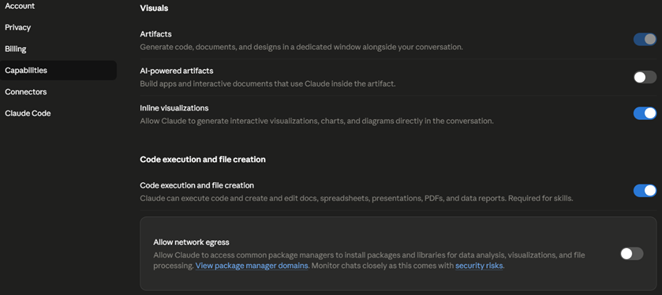
- Code execution and file creation: Επιτρέπει στο Claude να εκτελεί πραγματικό κώδικα (συνήθως Python) για να επεξεργάζεται υπολογιστικά φύλλα, να συντάσσει αρχεία PDF ή να αναλύει δεδομένα.
- Allow network egress (Δικτυακή πρόσβαση): Επιτρέπει στο Claude να συνδέεται με εξωτερικές πηγές (όπως package managers) για να εγκαθιστά βιβλιοθήκες που χρειάζεται για την ανάλυση των δεδομένων σας.
Προειδοποίηση Ασφαλείας: Η επιλογή αυτή έρχεται με πιθανούς κινδύνους ασφαλείας, καθώς το μοντέλο αποκτά πρόσβαση στο διαδίκτυο για συγκεκριμένες εργασίες. Πρέπει να την ενεργοποιείτε μόνο όταν είναι απαραίτητο για σύνθετες εργασίες ανάλυσης.
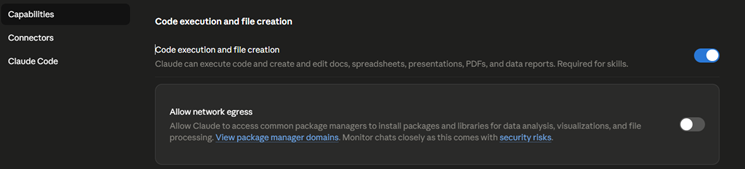
Usage (Όρια Χρήσης)
Η κατανόηση της κατανάλωσης των πόρων είναι απαραίτητη για τη διασφάλιση της αδιάλειπτης εργασίας σας. Το μενού Usage παρέχει μια πλήρη εικόνα για το πώς χρησιμοποιείτε το Claude μέσα στο χρονικό διάστημα που ορίζει το πλάνο σας.
Σημείωση: Η δυνατότητα αναλυτικής παρακολούθησης των ορίων χρήσης και η διαχείριση "usage credits" δεν είναι διαθέσιμη στο Free Plan.
Αυτή η μπάρα παρακολουθεί τη χρήση σας σε πραγματικό χρόνο κατά τη διάρκεια της ενεργής σας συνεδρίας. Η μέτρηση ξεκινά αυτόματα τη στιγμή που αποστέλλετε το πρώτο μήνυμα σε μια συνομιλία. Σας δίνει μια άμεση εικόνα του πόσο "βαριά" είναι η τρέχουσα αλληλεπίδρασή σας με το μοντέλο, βοηθώντας σας να διαχειριστείτε τον όγκο της πληροφορίας που ζητάτε.
- All models (Όλα τα μοντέλα): Αυτή η ένδειξη αφορά τη συνολική χρήση των κύριων μοντέλων του Claude. Εδώ παρακολουθείτε το ποσοστό κατανάλωσης και τη χρονική στιγμή του επόμενου "reset" (π.χ. Resets Sat 11:59 AM), ώστε να προγραμματίζετε τις πιο απαιτητικές σας εργασίες πριν από την ανανέωση των ορίων.
- Claude Design: Μια ξεχωριστή κατηγορία ορίων που αφορά τις λειτουργίες σχεδιασμού (design/prototyping). Είναι σημαντικό να διαχωρίζετε τη χρήση εδώ, καθώς οι εργασίες σχεδιασμού ενδέχεται να καταναλώνουν διαφορετικό ποσοστό των ορίων σας σε σχέση με τη γενική επεξεργασία κειμένου.
Daily Included routine runs: Εδώ εμφανίζεται η χρήση των αυτοματοποιημένων διαδικασιών («routines») που εκτελείτε καθημερινά. Το Claude παρέχει έναν συγκεκριμένο αριθμό τέτοιων εκτελέσεων ανά ημέρα (π.χ. 5/5). Είναι μια πολύ χρήσιμη ένδειξη αν χρησιμοποιείτε το Claude για επαναλαμβανόμενες εργασίες, ώστε να διασφαλίσετε ότι δεν θα ξεπεράσετε το ημερήσιο όριό σας σε αυτοματισμούς.
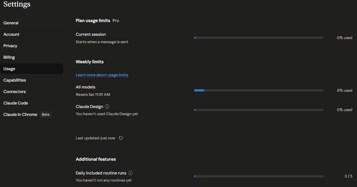
Για να διασφαλίσετε την αδιάλειπτη εργασία σας, το Claude προσφέρει τη δυνατότητα ενεργοποίησης Usage Credits. Πρόκειται για μια προαιρετική λειτουργία που εξασφαλίζει ότι η ροή της εργασίας σας δεν θα διακοπεί εάν εξαντλήσετε κατά λάθος τα εβδομαδιαία όρια του πλάνου σας.
- Turn on usage credits to keep using Claude if you hit a limit (Toggle Switch): Επιτρέπετε στο σύστημα να χρησιμοποιεί πιστώσεις εάν φτάσετε στο όριο χρήσης σας.
- Monthly Spend Limit (Μηνιαίο Όριο Δαπάνης): Μπορείτε να ορίσετε ένα συγκεκριμένο ποσό (π.χ. €20) ως μέγιστο όριο μηνιαίας δαπάνης. Το εργαλείο "Adjust limit" σάς δίνει την ευελιξία να προσαρμόζετε αυτό το όριο ανάλογα με τις τρέχουσες ανάγκες των project σας.
- Buy Usage Credits (Αγορά Πιστώσεων): Μπορείτε να προαγοράσετε πιστώσεις (με δυνατότητα έκπτωσης), οι οποίες προστίθενται στο Current balance.
- Auto-reload: Μια χρήσιμη επιλογή (On/Off) που μπορεί να αυτοματοποιήσει την ανανέωση του υπολοίπου σας, ώστε να μην χρειάζεται να ελέγχετε χειροκίνητα αν έχετε διαθέσιμο υπόλοιπο.
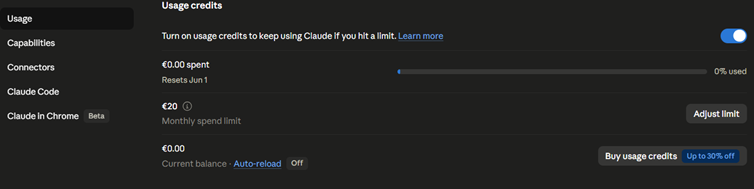
Ερώτηση κατανόησης
Εργάζεστε με εμπιστευτικά εταιρικά έγγραφα. Ποια ρύθμιση πρέπει οπωσδήποτε να ελέγξετε/απενεργοποιήσετε;
Account (Διαχείριση Λογαριασμού)
Το μενού Account προσφέρει εργαλεία για τον άμεσο έλεγχο της πρόσβασης και της κατάστασης του λογαριασμού σας. Είναι ένας χώρος που σπάνια χρειάζεται παρέμβαση, αλλά είναι απαραίτητο να γνωρίζετε τη λειτουργία του σε περίπτωση χρήσης του.
Log out of all devices
Μια κρίσιμη λειτουργία ασφαλείας. Εάν υποψιάζεστε ότι ο λογαριασμός σας έχει παραμείνει ανοιχτός σε κάποια κοινόχρηστη συσκευή ή αν η ασφάλεια της πρόσβασής σας έχει τεθεί σε κίνδυνο, αυτή η επιλογή αποσυνδέει το Claude από όλες τις ενεργές συσκευές ταυτόχρονα.
Delete your account
Η οριστική επιλογή διαγραφής του λογαριασμού σας. Όπως είναι αυτονόητο, η ενέργεια αυτή είναι μη αναστρέψιμη και συνεπάγεται τη διαγραφή όλων των συνομιλιών, των δεδομένων και των ρυθμίσεων που έχουν αποθηκευτεί στο Claude.
Organization ID
Ένας μοναδικός αναγνωριστικός κωδικός που συνδέει τον λογαριασμό σας με το οργανωτικό πλαίσιο της Anthropic. Είναι χρήσιμος κυρίως για σκοπούς τεχνικής υποστήριξης, εάν ποτέ χρειαστεί να επικοινωνήσετε με το κέντρο βοήθειας της εταιρείας για κάποιο ζήτημα που αφορά τον λογαριασμό σας.
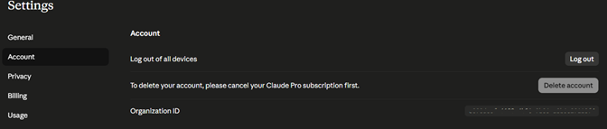
Billing (Συνδρομή και Πλάνα)
Το μενού Billing αποτελεί τον κεντρικό διαχειριστικό κόμβο για τη συνδρομή σας. Εδώ μπορείτε να δείτε την τρέχουσα κατάσταση του λογαριασμού σας, να αναβαθμίσετε το πλάνο σας και να ενημερωθείτε για τις παροχές που περιλαμβάνονται.
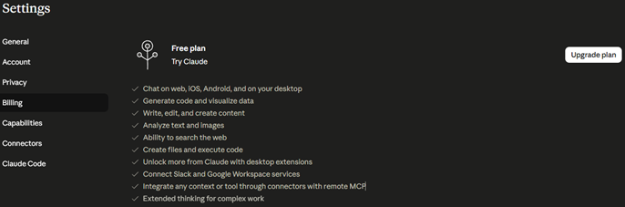
Ανακεφαλαίωση Ενότητας 1
Ας συνοψίσουμε τα βασικά σημεία της ενότητας:
- Το Claude είναι προηγμένο LLM της Anthropic (ίδρυση 2021), εκπαιδευμένο με την προσέγγιση Constitutional AI: ένα γραπτό «σύνταγμα» αρχών που δίνει προτεραιότητα στην ασφάλεια, την αντικειμενικότητα και τον σεβασμό προς τον χρήστη.
- Τα πλάνα κλιμακώνονται: Free (βασική χρήση με όρια 30–100 μηνυμάτων/ημέρα), Pro ($20/μήνα — Claude Code, Cowork, Research, απεριόριστα Projects, Microsoft 365), Max ($100/μήνα — 5x/20x χρήση, early access), Team (5–150 άτομα, θέσεις Standard/Premium, no model training) και Enterprise (SCIM, audit logs, HIPAA-ready).
- Η εγγραφή γίνεται στο claude.com με Google ή e-mail· ακολουθούν όροι χρήσης, επιβεβαίωση ηλικίας, ρύθμιση ιδιωτικότητας «Help Claude improve», όνομα και επαγγελματικό προφίλ.
- Η εφαρμογή εγκαθίσταται σε υπολογιστή (μέσω «Get the desktop app»), σε Android/iOS (stores — πάντα developer: Anthropic) ή ταχύτερα μέσω QR code («Get apps and extensions»).
Ανακεφαλαίωση Ενότητας 1 (συνέχεια)
- Στην πρώτη συνομιλία: σαφή prompts αντί για λέξεις-κλειδιά, follow-up οδηγίες για βελτίωση («πιο απλά», «πιο συνοπτικά», «άλλαξε ύφος»), και εργαλεία Copy / Αξιολόγηση / Retry κάτω από κάθε απάντηση.
- Οι 4 πυλώνες του καλού prompting: Ρόλος (Role), Πλαίσιο (Context), Στόχος (Task), Παραδείγματα (Few-Shot).
- Στα Settings: Custom Instructions για μόνιμες οδηγίες, Appearance (Dark/Light/System), Data Controls & Privacy (κρίσιμο το «Help improve Claude»), Capabilities (Memory, Connectors, Artifacts, Code execution), Usage (όρια & credits), Account & Billing.
Συγχαρητήρια! Ολοκληρώσατε την Ενότητα 1. Μπορείτε να επιστρέψετε σε οποιαδήποτε διαφάνεια από το πλευρικό μενού για επανάληψη — η πρόοδός σας αποθηκεύεται αυτόματα.